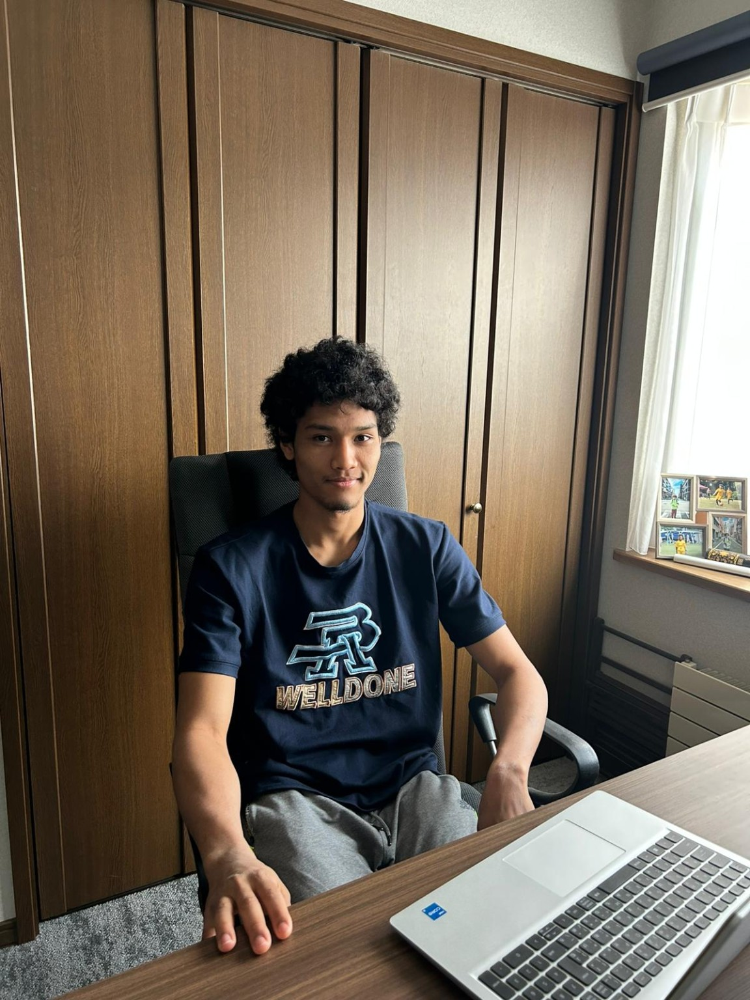

À propos de moi
Je m'appelle Abdourahmane Imam Diallo, né le 26 juillet 2007 au japon. Je suis titulaire d'un baccalauréat scientifique guinéen obtenu en 2025 et je vis actuellement au Japon.
Je suis passionné par le domaine de l'informatique, un domaine qui allie créativité, innovation et résolution de problèmes. Je développe actuellement mes compétences en programmation et je m'intéresse particulièrement au développement web.
Mon objectif est de devenir ingénieur en informatique. Pour cela, je souhaite intégrer une école comme SUPINFO afin d'acquérir des compétences solides et construire un projet professionnel sérieux.
Je suis une personne motivée, sérieuse et prête à m'investir pleinement dans mes études.